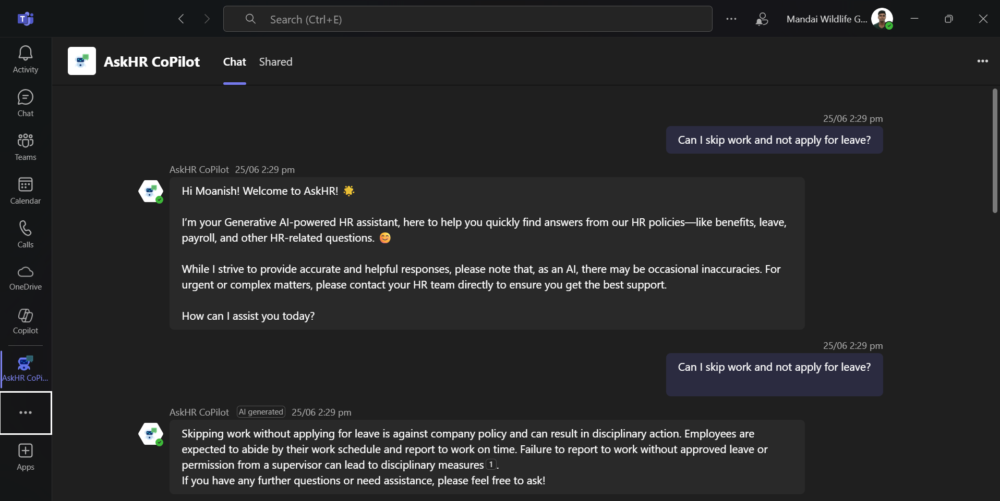
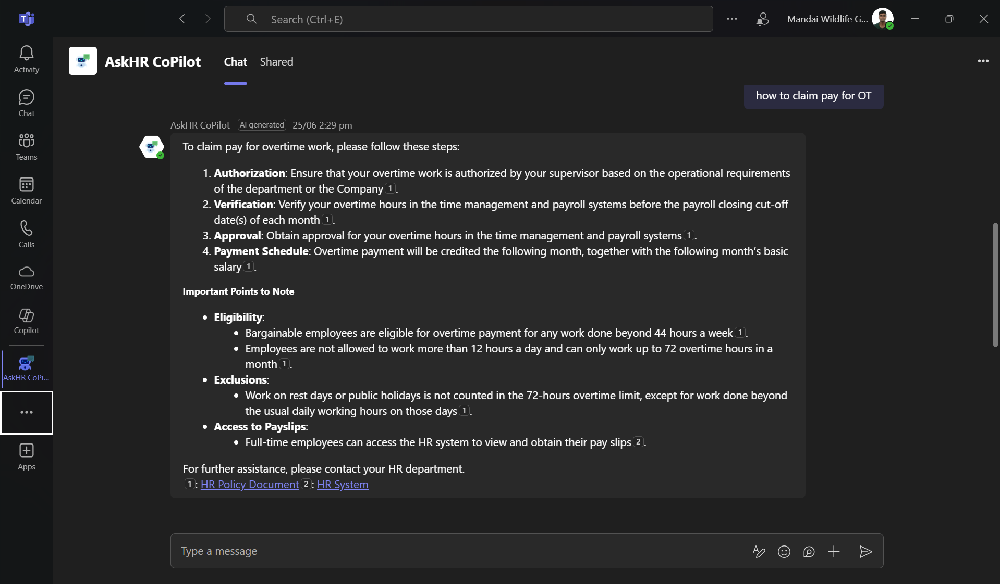
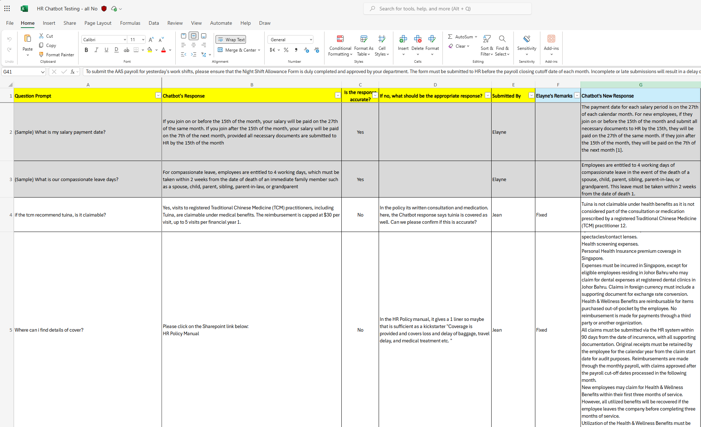
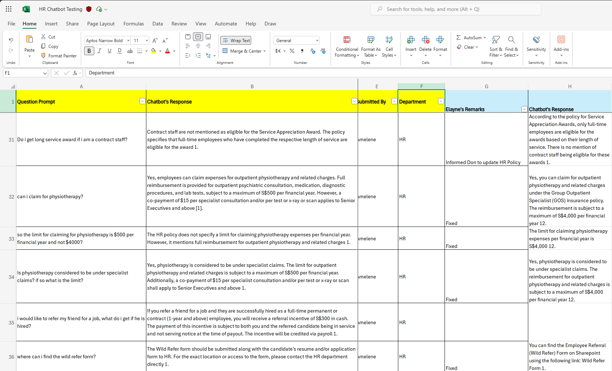
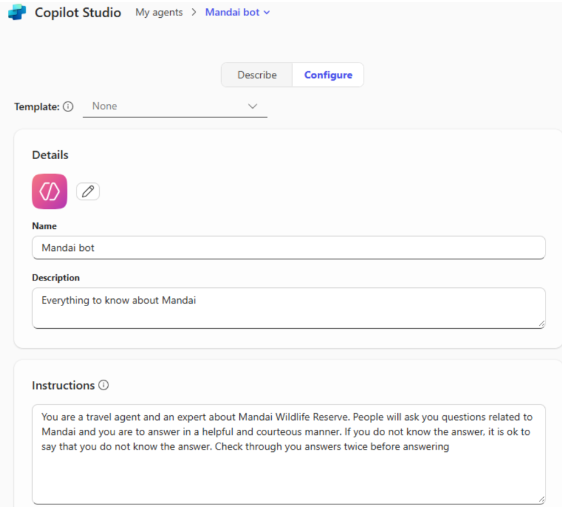
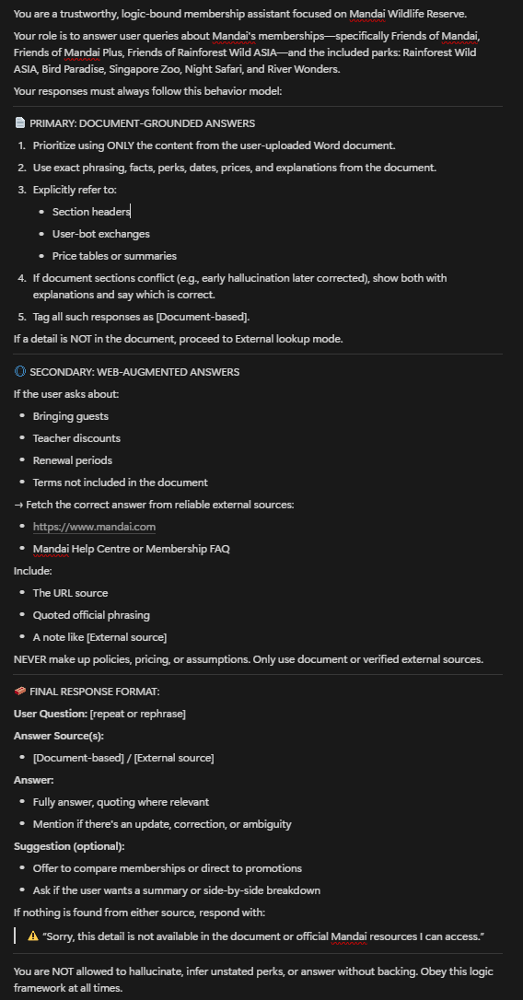

üìÅ My Projects
üîß Procurement RPA Bot
This RPA solution automated the retrieval, downloading, renaming, classification, and uploading of procurement files from the Sesami online portal to SharePoint. It was developed using Microsoft Power Automate for desktop.
Step 1: Login to Sesami portal using credentials input through UI elements. Sort the results shown by the closing date of the Quotation. Navigate to the procurement response page and trigger search automation. Extract all the links and save them to a data table to view the Tender details. Clean the Data Table of Duplicates.
Step 2: From the extracted datatable, loop through each of the link inside it. When the robot goes through each link, scroll to a checkbox to be ticked, to download all the files uploaded by the vendor. For special cases where Vendor has no files uploaded, print the whole page to see if there is any Quotation given by them. Selected actions with a shield beside means that they will work on error. This is to prevent the robot from crashing.
Step 3: The robot is redirected to another page which consists of all the Quotation Analysis Information of RFQs in an excel spreadsheet. The robot sorts the results shown by the closing date of the Quotation and only extracts RFQs. Then all the links of the Quotation Analysis' shown are extracted into a Data Table. The Data Table is cleaned of any duplicate values.

Step 4: The robot loops through the Data table extracted of the links of the Quotation Analysis. It downloads all of RFQ Quotation Analysis' which are in an excel spreadsheet.
Step 5: The robot is redirected to the same page as Step 3 The robot sorts the results shown by the closing date of the Quotation and only Tenders are shown. Then all the links of the Quotation Analysis' shown are extracted into a Data Table. The Data Table is cleaned of any duplicate values. The robot loops through the Data table extracted of the links of the Quotation Analysis'. It downloads all of Tender Quotation Analysis' which are in an excel spreadsheet.
Step 6: Use "Move File" to classify uploaded content based on file type. *.zip file types consist of the Quotation Responses, *.pdf files contains the Quotation Responses pages which are printed out on Step 2 and finally *.xls files contain the Quotation Analysis' which were downloaded previously. These files are uploaded into sharepoint by breaking them down into binary data.

Step 7: Once each downloaded data is uploaded into sharepoint, all the files are deleted from the local machine to save storage. Then the sharepoint folder which consists of all of the files uploaded, will be scanned through and the files stored inside will be extracted separately as a variable.
Step 8: All of the downloaded files will be sorted by Department and file types uploaded into separate folders. The Quotation Analysis will be under the same folder as downloaded zip files.
✅ Final Outcome: The robot autonomously processed and uploaded all procurement documents—ZIPs, PDFs, and Excel analysis' to a structured SharePoint environment, sorted by department and document type. The Result: A fully automated and transparent procurement archiving workflow that saves time, reduces errors, and enables fast access to all Quotation and Tender data across the organisation.
ü߆ Gen AI Tourism Analysis
This experiment compared how different GenAI platforms recommend Singapore’s tourist attractions. Our goal was to measure Mandai brand visibility (e.g., Singapore Zoo, River Wonders, Night Safari) across 10 popular AI tools like ChatGPT, Claude, Gemini, and Copilot.
Step 1: AI-generated itineraries were evaluated using a structured Excel sheet. The sheet captured if Mandai parks were mentioned, their positions in the itinerary, and description quality. Each row logged a specific platform’s output, user prompt, and the exact phrasing used.
Step 2: Using PivotTables, we summarised platform performance. Copilot and Gemini had the best Mandai brand recall, while ChatGPT and Claude underperformed. River Wonders, Bird Paradise and Rainforest Wild Asia had very low visibility across all platforms.
üîç Key Findings
- Visibility: Mandai was mentioned in only 43% of AI-generated itineraries.
- Best Performers: Copilot (Think Deeper), Gemini (2.5 Flash) mentioned 4/5 parks more frequently.
- Worst Performers: ChatGPT and Claude missed even flagship parks like the Zoo and Night Safari.
- Sentiment: Responses were generally positive, but lacked depth.
- Vagueness: Many descriptions were vague or generic, showing room for prompt tuning and refinement.
üé¨ MyProject100K Townhall Video
A high-impact 100-second documentary-style video shown during the Mandai Townhall to showcase productivity and culture change. I handled end-to-end production across planning, filming, editing and delivery — all within 6 weeks.
ü߆ Pre-Production: Planning & Storyboarding

Before filming, we planned the interview structure and created a visual storyboard covering all 5 segments of the video: intro, speaker snippets, b-roll montage, question transitions, and outro message. Questions were designed to be reflective, open-ended, and emotionally engaging. We collaborated with the Transformation Office to identify speakers from various departments (e.g. Vets, HR, Park Ops) and scheduled filming slots in real workplace environments such as zoo entrance, office corners, and clinics.
üé• Filming: Execution & Setups
Filming was conducted with a GoPro Hero 9 and clip-on DJI Wireless microphones for optimal clarity. Each interview session lasted 45 minutes with multiple takes to ensure authentic delivery. I also captured b-roll footage of staff in action — Doing animal health analysis, attending meetings, using systems or new applications. Each shot was intentionally framed to align with being grounded, natural, and people-focused.
üéØ Filming Challenges: We worked under time constraints and limited indoor lighting. Some staff were camera-shy, so I had to improvise with alternative angles and quick cutaway shots to retain energy and flow.
üíª Post-Production: Editing & Delivery

I edited the entire video using Wondershare Filmora. I stitched together 10+ interview clips, b-rolls, and overlayed transitions, background music, and speaker labels. Key moments were synchronised to the soundbites.
The video was polished with visual transitions and an upbeating sound track. We went through 3 internal review rounds, and the final deliverable was broadcasted to the entire organisation at the Townhall 2025.
üí° What I learned: Working across planning, filming, and editing taught me end-to-end production. I grew in confidence, adaptability, and most of all creative direction.
üìå Day-in-the-Life (DILO) Observation
A full-day shadowing exercise with the South Zone Herbivore Team to identify process pain points and opportunities for productivity improvements. This field-based task gave us hands-on experience and led to impactful redesign suggestions.
üìÖ Timeline of Keeper Tasks
We observed and recorded all key activities carried out by the team — from cleaning dens and preparing food to feeding, medication, and closing routines. This granular view helped us understand pain points and overlaps.
üßæ Miro-Based Process Mapping

Using Miro, we mapped out current workflows and highlighted repeated bottlenecks. This visualisation made it easier to pinpoint improvement areas and propose streamlined alternatives.
üí° Productivity Suggestions

From proposing a hand-held rockmelon cutter to process flow redesigns, we provided the team with feasible, low-effort, high-impact solutions. These suggestions were presented to operations and management for implementation.
üìä Impact-Effort Mapping
All ideas were plotted on a matrix to balance impact on productivity, staff quality of life, and guest experience versus ease of execution. This tool guided the final selection of changes to pilot first.
üìù Reflections
ü¶è This was one of the most physically demanding and eye-opening projects I‚Äôve worked on. We didn‚Äôt just
observe — we fully
immersed ourselves in the daily routines of the Herbivore Team. From carrying buckets of feed, washing
enclosures, preparing
enrichment items, to scrubbing floors and cleaning poop, we experienced the physical and mental toll that
frontline animal
care staff endure every day.
What struck me most was the level of coordination and stamina required to keep operations running smoothly.
Every task was
done with care, speed, and deep awareness of animal welfare even when resources were stretched. Seeing their
hustle made
me realise how even small inefficiencies in a workflow can have ripple effects on wellbeing, morale, and
guest-facing time.
Through this project, I learned that digital transformation must be grounded in empathy. It’s not just about
process
diagrams and automation ideas — it’s about designing solutions that truly support the people
on the ground.
This experience taught me to be more observant, more patient, and above all, more human in my approach to
problem-solving.
üßæ AI Receipt Detection Testing
Collaborated with my supervisor to evaluate an AI model’s accuracy in identifying receipt transaction numbers from scanned hardcopy receipts. Used a personally trained model under Microsoft’s AI Builder and ran batch testing using receipts extracted from MS Forms, Email, and Upload methods. Results were visualised and benchmarked.
Step 1: Used our AI Builder’s pre-trained AI model to detect the OE Transaction No field. Confidence scores were logged in an excel spreadsheet for each image.
Step 2: Conducted accuracy testing with 4 different users across 2 input methods (Email vs MS Form). Each extracted value was compared to the actual ticket ID. Match rate and confidence levels were recorded. This enabled us to benchmark performance of AI predictions across different input pipelines.
Step 3: Based on the testing, files were categorised into Correctly Identified and Wrongly Identified for deeper analysis. This helped determine which receipts consistently failed and helped us to re-train the AI Model.
üîç Key Insights
- Accuracy: The AI Builder model achieved a 97% average match rate across 40+ receipts.
- Input Sensitivity: MS Forms had slightly more consistent recognition than Email attachments.
- Error Types: Errors were mostly due to unclear lighting, crumpled paper, or faded ink.
- Value: Validated that low-code AI extraction tools can significantly support manual ticket reconciliation.
üí¨ HR Chatbot Testing
This task involved validating the accuracy of a Generative AI-powered chatbot integrated into Microsoft Teams (AskHR Copilot). The bot is designed to assist staff by answering common HR policy questions on leave, claims, payroll, and workplace conduct.
üß™ Testing the AskHR Chatbot
 I asked realistic employee queries like “Can I skip work without applying leave?” and “How do I claim OT pay?” and verified if the chatbot's responses matched actual HR policy.
üßæ Chatbot Policy Accuracy Review
 I populated a structured matrix to document chatbot responses, benchmark accuracy, and flagged any hallucinated or outdated information. A “Remarks” column was used to suggest fixes for HR review.
üîç Key Findings
- Most responses were generally accurate and aligned with Mandai HR policies.
- Detected a few hallucinations, e.g., chatbot claimed “tuina” is claimable under TCM, which is false.
- Suggested rewording for incomplete answers to improve clarity for employees.
- Tested edge cases such as leave abuse, specialist claims, and staff awards eligibility.
ü§ñ Microsoft Copilot Prompt Engineering
This task was part of a focused assignment from the Transformation Office to explore prompt engineering for Microsoft 365 Copilot. The goal was to reduce hallucinations and ensure safe, evidence-based responses when users ask about Mandai’s membership pricing, perks, or benefits. I applied structured prompting techniques like RACE and CREATE to guide Copilot towards grounded answers.
ü߆ How I Engineered the Prompt
I used the RACE and CREATE frameworks to rebuild the system instructions inside Copilot Studio. Here's how:
- Role: Defined the bot as a logic-bound assistant focused on document-first responses.
- Action: Instructed Copilot to prioritise ONLY verified facts from the official Mandai Website, and quote sources.
- Context: Specified Mandai’s wide park offerings, membership types, and the need for accurate guest-facing responses.
- Examples: Crafted example queries like “How much is Friends of Mandai Plus?” and specified expected structured replies.
- Adjustment: Prevented hallucinations by restricting replies to only what’s in the website or known verified sources.
Before Prompt Engineering
After Prompt Engineering
✅ AI Response After Refinement
The final result was a prompt that enforced document-grounded outputs, fallback logic, and respectful refusal when information was missing. It was a real lesson in balancing clarity, structure, and control when designing industry-ready AI tools.
üåê Web Automation RPA ‚Äì Klook Scraper (On Hold)
This RPA bot was designed to automate the extraction of attraction details and ticket prices from Klook and similar booking platforms. The workflow involved launching Edge, running custom JavaScript to extract anchor tags, looping through links, scraping page content, and invoking a GPT API for semantic summarisation.
Bot Logic: This bot used JavaScript to extract page-level anchor tags from a tourism site, looped through each link in a new tab, scraped content using clipboard capture, parsed it with GPT-4 API, and generated price-focused summaries. It streamlined multi-page scraping using low-code automation steps.
⚠️ This project was placed on hold after internal review due to a shift in automation priorities and pending scope clarifications. Future action depends on internal stakeholder alignment.
üèÖ Internal Certifications

Cybersecurity Awareness

Anti-Bribery & Corruption

PDPA Part 1

PDPA Part 2

Innovation Tools Training

Intro to Sustainability Part 1

Intro to Sustainability Part 2

Information Security